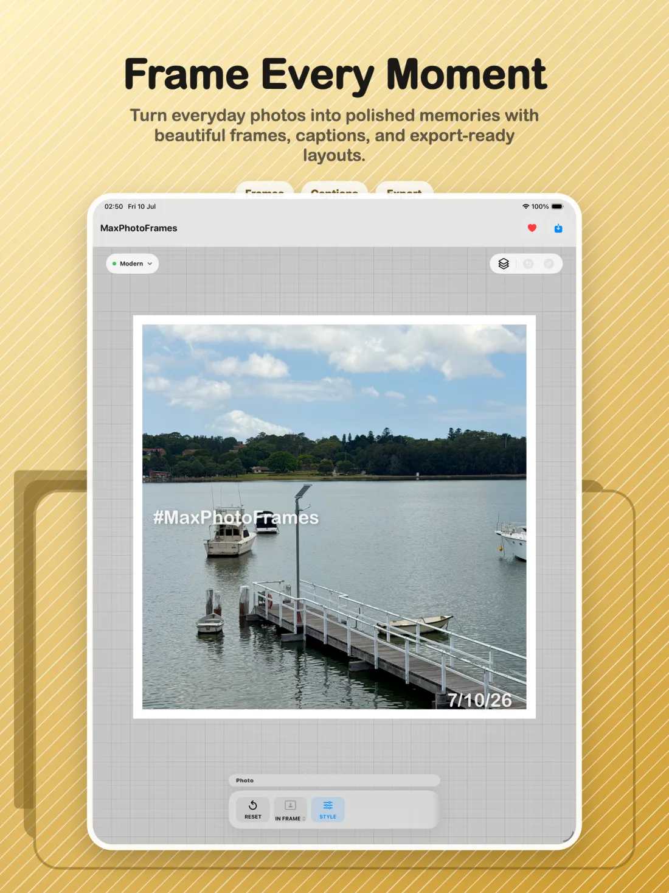
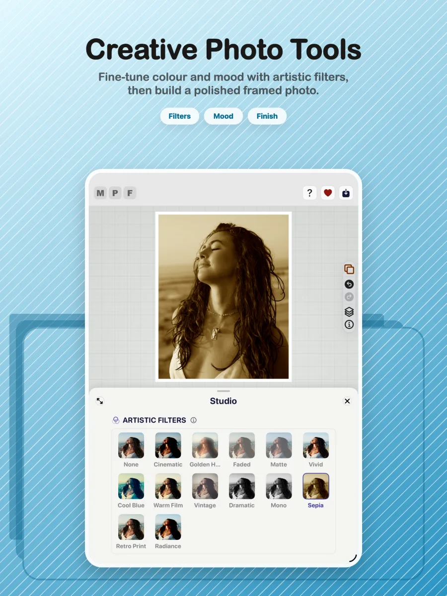
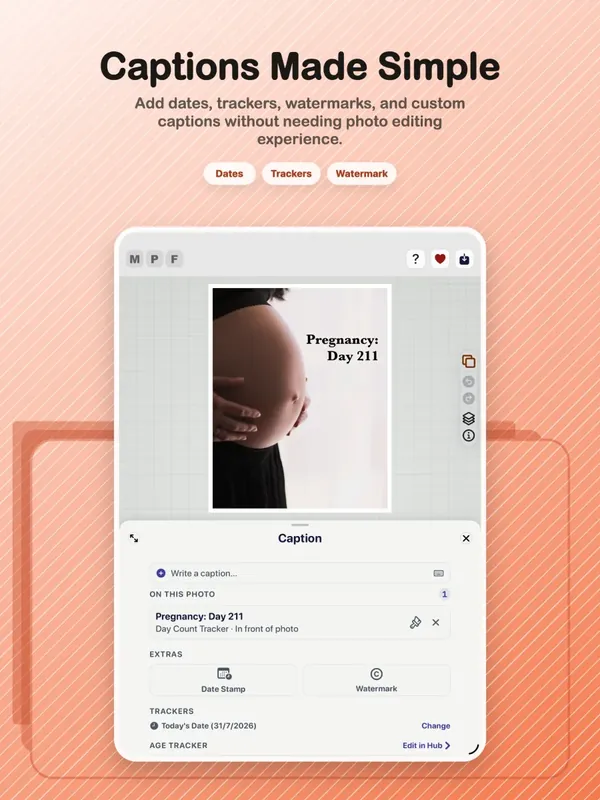
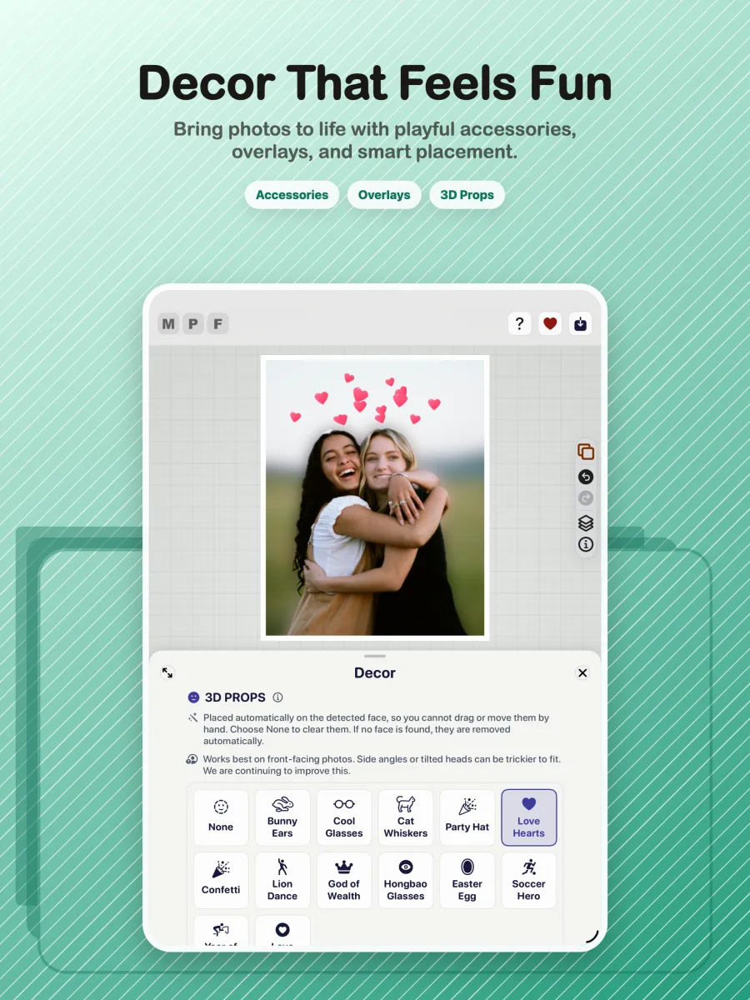

15 Sep 2025
v1.0 · The first release
Max Photo Frames begins as a working photo-framing product.
A privacy-first collage and retro photo frame app for turning everyday images into polished framed memories with captions, AI-assisted editing, 3D Props and export-ready layouts.

Photography has always been one of my hobbies. Over the years I've captured thousands of photos, family moments, holidays, landscapes and everyday memories. I wanted an app that could present those memories beautifully without subscriptions, watermarks or giving away unnecessary personal data.
Most apps I tried either locked features behind expensive subscriptions or uploaded photos to third-party services. As someone who values privacy, I wanted something different, so I decided to build it myself.
These milestones come from the local Git tags and release history.
Max Photo Frames begins as a working photo-framing product.
Date fallback, smart captions, skin smoothing, trackers and release hardening shape the v2.8 series.
The interface and requirements are source-verified to guide the next stage of the product.
The V5 architecture, AI-assisted editing, 3D Pop, captions and export parity reach the App Store submission milestone.
A small, readable sample of the Git work behind the releases—not the full private repository log.
2b53c9a6The first iOS and iPad release is captured for the App Store.
b1f3b412Date-stamp fallback and smart-caption handling for photos with unknown dates.
d2d0d448Automated comparison work protects the relationship between live preview and export.
98e8cb85Backup returns to Hub and includes the SwiftData caption library.
Repository snapshot: 1,654 first-parent commits on main, 2,061 commits across local refs, and 17 release or milestone tags. Commit count describes repository activity, not hours worked.
Max Photo Frames began as an experiment using AI-assisted “vibe coding”. As I learned more about iOS development, the project evolved into a properly engineered application with reusable components, improved architecture, performance optimisation and a polished user experience.
The goal is to keep the core application free so anyone can create beautiful framed memories. The ambition is to make Max Photo Frames the number-one free photo-framing app on the App Store. Rather than subscriptions, the project will be supported through optional tips from users who want to contribute to ongoing development.
Build a look quickly, then tune borders, canvas shape, gradients, shadows and colour.
Blur, cut out or keep the original background while maintaining preview and export parity.
Add captions, dates, watermarks and calculated memory trackers with precise placement.
Add face-aware decorative props and save dependable high-quality stills.
The V3 experience is organised around five focused areas, so the editing journey stays clear from import to export.






Max Photo Frames is a SwiftUI-first iOS photo editor with a non-destructive document model and a strict preview-to-export parity goal.
SwiftUI, iOS 17 Observation with @Observable, a custom staged editor layout, Swift concurrency and a canvas-first interaction model.
Apple Vision foreground masks, Core Image compositing and filters, Photos/PhotosUI integration, skin smoothing and subject cutouts.
ExportInteractor, ExportManager, RenderService and layout math stay aligned with the live SwiftUI preview.
Reusable frame profiles, persisted media layers and a V5 document model keep editing flexible while protecting user work.
Avid photographer wanting a better way to preserve memories.
No unnecessary photo collection.
Learn modern iOS and AI-assisted engineering.
Free app with optional tips instead of subscriptions.
The app supports both the original workflow and the 3D Pop workflow. Testing focuses on memory management, caching, restoration, exporting and ensuring edits persist correctly across both paths.
A step-by-step guide will show the complete journey from choosing a photo to exporting a finished memory.
The finished tutorial will include tap-by-tap instructions, practical tips, accessibility notes and short videos or annotated screenshots.
Import a photo, explore frames and use Studio tools to establish the look.
Use the unified text tools to add captions, trackers, watermarks and dates.
Experiment with Layer Magic, 3D Pop, props and decorative finishing touches.
Check the result, choose export quality and save a dependable finished image.
Find support resources, report a bug or share a feature request on the support page.
Image credits · Unsplash contributors: Joshua Koblin, freestocks, Lena Krieg and Xu Duo.